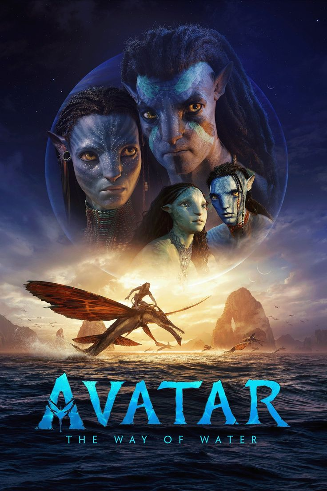
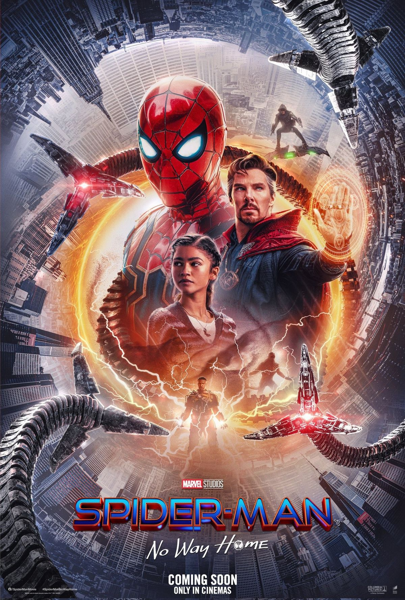
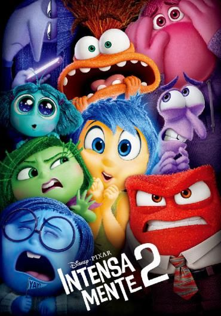
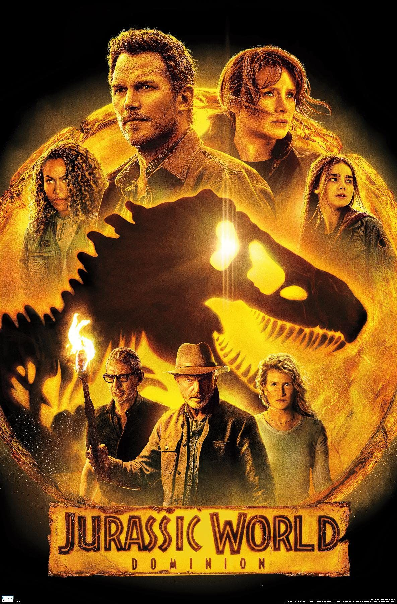
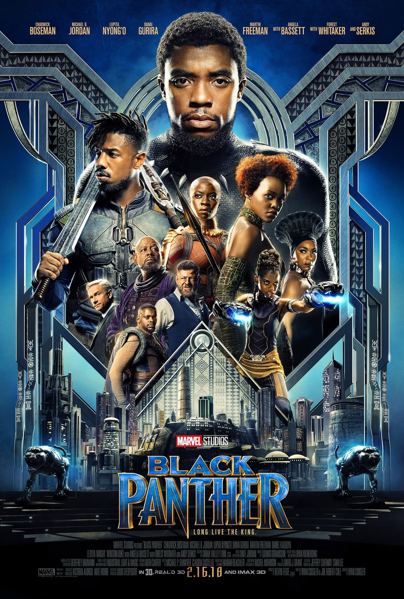
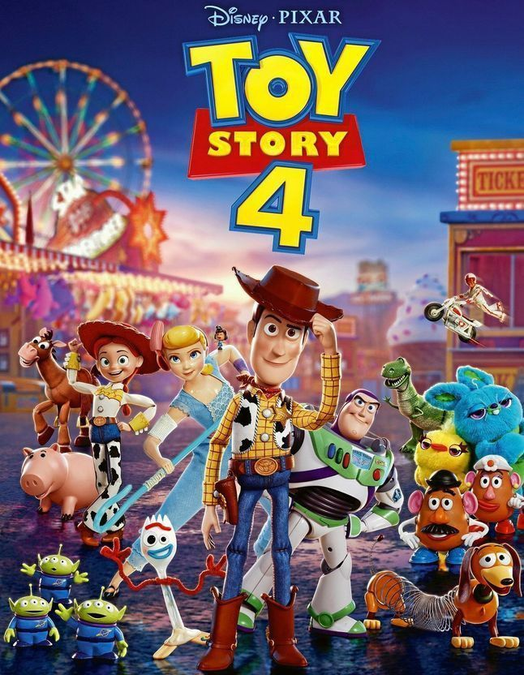

Avatar: El camino del agua
Género: Ciencia ficción / Aventura
Una película de aventura y fantasía visual ambientada en el asombroso mundo de Pandora.
Jake Sully y Neytiri forman una familia y hacen todo lo posible por permanecer juntos.
Sin embargo, deben abandonar su hogar cuando una antigua amenaza resurge con fuerza.
Horarios:
14:00 | 17:30 | 20:45

Spider-Man: No Way Home
Género: Acción / Superhéroes
Tras revelarse su identidad secreta, Peter Parker acude al Doctor Strange en busca de ayuda.
Lamentablemente, el hechizo sale mal y los villanos más peligrosos del multiverso cruzan a su mundo.
Ahora, Spider-Man deberá enfrentar su mayor desafío para salvar su realidad y a sus seres queridos.
Horarios:
13:00 | 16:00 | 19:30

Intensamente 2
Género: Animación / Comedia
Riley entra en la etapa de la adolescencia, lo que significa que el cuartel general de su mente
sufre una repentina demolición para hacer sitio a algo totalmente inesperado: ¡nuevas emociones!
Alegría, Tristeza, Ira, Miedo y Asco no saben cómo reaccionar ante la llegada de Ansiedad.
Horarios:
15:00 | 17:00 | 19:00
![[ FOTO ]](imgs/pelicula4/img1.jpg)
Avengers: Endgame
Género: Acción / Ciencia Ficción
Tras los eventos devastadores provocados por Thanos, el universo se encuentra en ruinas.
Con la ayuda de los aliados restantes, los Vengadores originales se reúnen una vez más.
Su objetivo es viajar en el tiempo, revertir las acciones del Titán Loco y restaurar el equilibrio.
Horarios:
18:00 | 21:30 | 23:15
Coco
Género: Animación / Fantasía
Miguel es un joven con el gran sueño de convertirse en una leyenda de la música.
A pesar de la prohibición de su familia, su pasión lo lleva a adentrarse en un nuevo mundo.
Visitará la impresionante y colorida Tierra de los Muertos para descubrir su verdadera historia.
Horarios:
14:30 | 16:45 | 18:00
Super Mario Bros: La película
Género: Animación / Aventura
Un fontanero de Brooklyn llamado Mario viaja a través del mágico Reino Champiñón.
Junto a la princesa Peach y un simpático Toad, emprende una aventura épica para encontrar
a su hermano Luigi y salvar al mundo de las terribles garras del malvado rey Bowser.
Horarios:
13:30 | 15:45 | 18:15

Jurassic World
Género: Acción / Aventura
Veintidós años después de los eventos del parque original, la isla Nublar cuenta con nuevas atracciones.
Todo parece funcionar a la perfección hasta que un nuevo dinosaurio híbrido genéticamente modificado
logra escapar de su recinto, desatando el caos y poniendo en peligro a todos los visitantes.
Horarios:
19:00 | 22:00 | 23:45

Black Panther
Género: Acción / Superhéroes
Tras la muerte de su padre, T'Challa regresa a la aislada y tecnológicamente avanzada Wakanda.
Su objetivo es ocupar su lugar legítimo como rey, pero la reaparición de un poderoso enemigo
pondrá a prueba su temple, amenazando el destino de su nación y del mundo entero.
Horarios:
16:30 | 19:15 | 21:00

Toy Story 4
Género: Animación / Comedia
Woody siempre ha tenido clara su labor en el mundo: cuidar con dedicación a su dueño.
Pero cuando Bonnie añade a su habitación un peculiar y asustadizo juguete llamado Forky,
comienza una aventura por carretera que le mostrará lo inmenso que puede ser el mundo.
Horarios:
14:15 | 16:30 | 18:45
Rápidos y Furiosos 10
Género: Acción / Crimen
Dom Toretto y su familia creían haber dejado atrás los enormes peligros de su agitada vida.
Sin embargo, ahora deben enfrentarse a Dante Reyes, un enemigo aterrador que emerge del pasado,
alimentado por una sed de venganza y decidido a destruir todo lo que Dom ama para siempre.
Horarios:
20:00 | 22:45 | 00:30